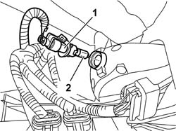

5550D26 REVERSING LIGHT BULB - R+R
- Path
- Procedures > 55 ELECTRICAL EQUIPMENT > 5550 WARNING AND MANOEUVRING INDICATORS > 5550D BRAKE AND REVERSING LIGHTS > 5550D26 REVERSING LIGHT BULB - R+R
- Kind
- repair procedure (removal / refitting; the operation number is the code)
- Applies to
- all engines; all production periods
- Interactive page
- https://sloeber94.github.io/elrnDB-aGt/en/#/125001702
Applies to: all engines; all production periods
 Removing
Removing
 Refitting
RefittingPlace the vehicle on a ramp and raise it.
1. Rotate the bulb holder in an anti-clockwise direction and extract it from the housing.
2. Remove the (press-fit) all glass bulb.

Applies to: all engines; all production periods
Refitting
RemovingCheck the operation of the bulb.
Refit the bulb in the bulb holder.
Refit the bulb holder rotating it in a clockwise direction.
Remove the vehicle from the lift.
Check the operation of the reversing lights.